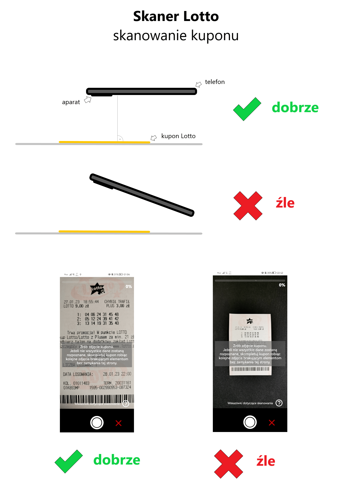

Wskazówki skanowania kuponów w aplikacji SKANER LOTTO
Krótkie filmy przedstawiające działanie aplikacji:
Skanowanie kuponów jest operacją złożoną i należy zadbać o odpowiednie warunki, aby dane kuponu zostały poprawnie
rozpoznane.
Jeżeli po zrobieniu zdjęcia kuponu nie wszystkie dane zostaną rozpoznane, skompletuj kupon robiąc kolejne
zdjęcia brakującym elementom bez zamykania podglądu aparatu.
Zadbaj o równomierne oświetlenie kuponu. Padające cienie na kuponie mogą znacząco utrudnić rozpoznanie danych.
Przybliż maksymalnie kupon tak, aby w podglądzie były widoczne tylko istotne dane. Nie oddalaj zbyt daleko
kuponu od telefonu, tak jak na poniższym rysunku.
Nie próbuj skanować kodu kreskowego na kuponie, ponieważ nie jest on wykorzystywany przez aplikację. Dane kuponu
są rozpoznawane
przy użyciu
technologii OCR, czyli poprzez rozpoznanie tekstu ze zdjęcia kuponu. Zrób zdjęcie całego kuponu, a na ekranie
powinien pojawić się podgląd jego danych.
W przypadku problemów z rozpoznaniem kuponu, spróbuj zacząć skanowanie od środkowej sekcji z liczbami zakładów,
które wraz z
datą losowania są najważniejszymi danymi kuponu.
Podczas skanowania staraj się ustawić telefon równolegle do kuponu, tak jak na poniższym rysunku. Skanowanie
kuponu pod kątem może znacznie utrudnić prawidłowe rozpoznanie danych.

Uwaga
Jeżeli kupon jest pognieciony, pokreślony, poplamiony lub uszkodzony, mogą być problemy z jego zeskanowaniem.
Kontakt
W razie pytań dotyczących skanowania proszę o kontakt na adres e-mail:
skanerlotto@gmail.com